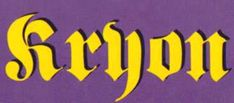

DNANIN ON İKİ TABAKASI
"Bir sonraki tekâmül aşamasına hazır olanlar için Kryon’un verdiği bilgiler son derece değerlidir. Bunlar hem bize, hem de gezegenimize şifa verecek bilgilerdir. Kryon herşeyin gerçekten yolunda olduğunu ve yapacak işimiz olduğunu bilmemizi sağlıyor."
Louise L. Hay
‘’Kryon’un medyum kanalıyla verdiği mesajlar giderek olağanüstü değerli hale geliyorlar. Yeni Çağ gerçekten üzerimizde.”
Metaphysical Reviews
"Bu kitaba açık bir zihinle yaklaştım ve onu elimden bırakamadım. Kryon’un sözleri sevgi dolu, huzur verici ve güven tazeleyici. Bir hayli büyük haberle karşı karşıyayız.”
The Light Connection
"Bilgilerin sunuluşundaki sadelik bu çalışmayı Metafizikle yeni tanışmış kimseler için son derece anlaşılır kılmakta, kıdemli yeniçağcılara da birçok yeni içgörü vermektedir...”
The Connecting Link Magazine
"Kıyamet kehanetlerinden bıktınız mı? Bu kitap ise şaşırtıcı olumlulukta, berrak ve pratik bir bilgi sunuyor. Yaşamımızı değiştirme potansiyeliyle dolu bu bilgi Ruh’un insanlara olan inanılmaz sevgisini yansıtıyor.”
Arizona Networking News
"Gerçekten büyük meseleleri direkt ve sevgi dolu bir biçimde ele alan bu kitabın tüm dünyada çok ses getireceğine inanıyoruz.”
The New Times
www.akasa.com.tr